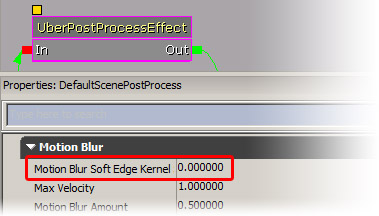
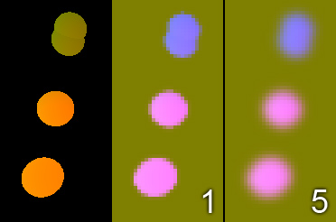

UDN
Search public documentation:
MotionBlurSoftEdgeCH
English Translation
日本語訳
한국어
Interested in the Unreal Engine?
Visit the Unreal Technology site.
Looking for jobs and company info?
Check out the Epic games site.
Questions about support via UDN?
Contact the UDN Staff
日本語訳
한국어
Interested in the Unreal Engine?
Visit the Unreal Technology site.
Looking for jobs and company info?
Check out the Epic games site.
Questions about support via UDN?
Contact the UDN Staff
运动模糊柔和边缘后期处理特效功能
 |
| SoftEdge（柔和边缘）使得运动模糊出现在运动物体的外面。 |
概述
激活SoftEdge功能并设置正确的参数
|  |
| 0保持SoftEdgeg功能为禁用状态 (速度较快), 较大的值指定了半径 (1..10 是一个很好的范围) |
当使用SoftEdge功能时，您可以增加最大速度，因为在启用这个功能时较强的运动模糊效果看上去会更好。
结果
 |
| 左侧: 仅在对象中产生模糊 中间： 使用这个功能来使得对象的外面发生模糊 右侧： 使用较大的半径来完全地扩展这个效果。 |
在运行时修改值
 |
| 控制台命令的帮助如下所示。 |
实现
|  |
| 左侧: 速度贴图 中间: 模糊的速度贴图（小半径） 右侧： 模糊的速度贴图（大半径） |